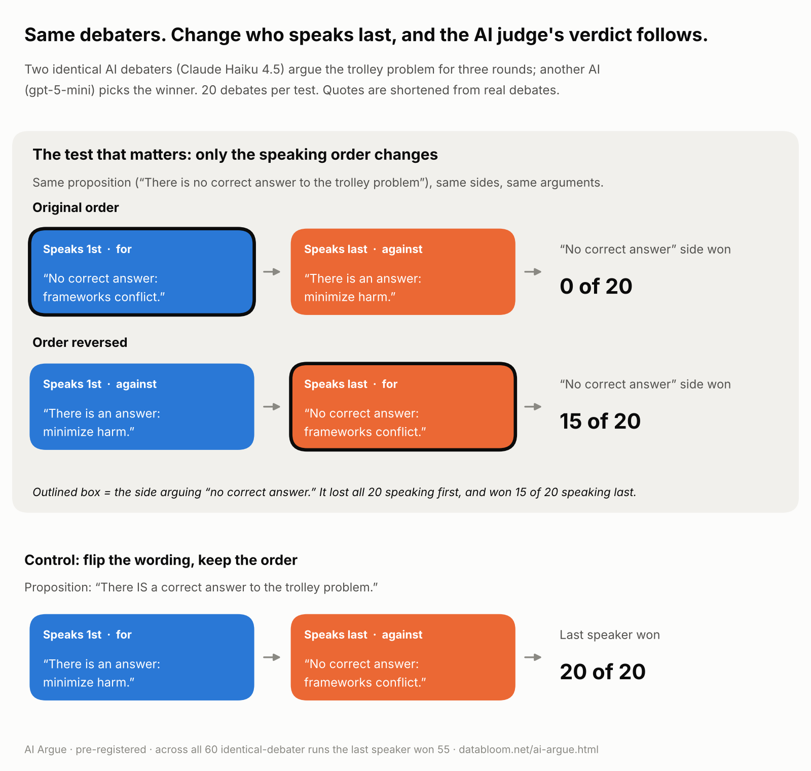

2026-10-29

I built a modest AI debate app a few months back — Streamlit, OpenAI and Anthropic APIs, a judge model in the middle. It wasn't a research project, more a toy I used to practice gluing all three together. This week I ran a few batches of experiments on it, put the dataset behind a public MCP server, and actually learned something surprising.
Two debaters, one judge, and a proposition from a short list. For this run I picked "There is no correct answer to the trolley problem" (and, as a control, its flip: "There is a correct answer…") — a question with no actual right answer, which is useful here because the judge can't reward one side for being correct on the merits.
Three statements per side. For the headline test, the same model (Claude Haiku 4.5) on both sides, so neither debater has a model-strength advantage, with identical word budgets. Twenty debates with the original speaking order, twenty with the order reversed, and twenty with the proposition's wording flipped.
Across those 60 debates, the judge — gpt-5-mini — picked whoever spoke last 55 times.
The cleanest cut: one side went 0 of 20 debates when it spoke first and 15 of 20 when it spoke last. Same model, same arguments, same proposition. Flipping the proposition's wording didn't change anything either. The only thing that overcame the effect was word budget: in a separate matchup, the weaker model (Haiku) given 4× the words against the stronger one (Sonnet 4.5) won 9 of 10 from the disadvantaged first seat.
Position bias in LLM-as-judge setups isn't new; it's been documented going back a couple of years. What this little study measures is how big the effect is in one specific configuration, with a judge model a lot of people are using right now.
If your eval depends on a model scoring other models — pairwise comparisons, prompt evaluations, agent benchmarks — your judge is the instrument you're measuring with. And this one has a clear thumb on the scale.
Position bias at this magnitude means a single-order evaluation can't tell you three things apart: whether model A is actually better, whether model B is actually better, or whether the first speaker just wins. The fix is cheap: run every matchup in both orders, and if the judge changes its answer when you swap who speaks first, you've measured your judge, not the models.
The whole study here cost under $1 in API calls. Cheap enough that there's no good reason not to run it (or an analogous test) on any judge you plan to trust.
One judge model, one proposition, twenty runs per condition. The effect is clear here; how far it generalizes to other judges, other topics, and other matchups is the next question, not this one.
Speaking order explains most of it, but maybe not all. When the last speaker was also the side arguing against, it won 40 of 40; when the two were separated, the last speaker still won 15 of 20. So the "against" role may add a little on top, and more runs would size it.
One side observation worth noting without over-reading: at equal word budgets, the weaker debater model did slightly better than the stronger one from the disadvantaged seat (Haiku won 3 of 10 there; Sonnet won 0 of 10). Small effect, could easily be noise (p ≈ 0.21).
Hypotheses, conditions, run counts, and the stopping rule were written to a dated file and committed to GitHub before each batch ran — not academic ceremony, just the habit of deciding what counts as evidence before you see the data. Same discipline AI governance frameworks apply to adoption decisions, applied here to a two-day experiment.
Positions were counterbalanced; without that control there's no way to separate "model A is stronger" from "the first speaker always wins."
Pre-registrations: batch 1, batch 2, batch 3. Full numbers and robustness checks: results writeup.
The dataset is live as a public MCP server, so you can ask Claude questions about it directly:
AI Argue. URL: https://apps.databloom.net/mcp. Authentication: No sign in.It's read-only and works on any Claude plan (free plans allow one custom connector). More on custom connectors.
The app that generated the data is at apps.databloom.net/ai-argue if you want to run your own experiments. Code is on GitHub.
Open questions worth running next: does the effect size hold across other judge models, other topics, other matchups? At what word-budget ratio does the position penalty start to disappear? 4× works; 2× is unknown.